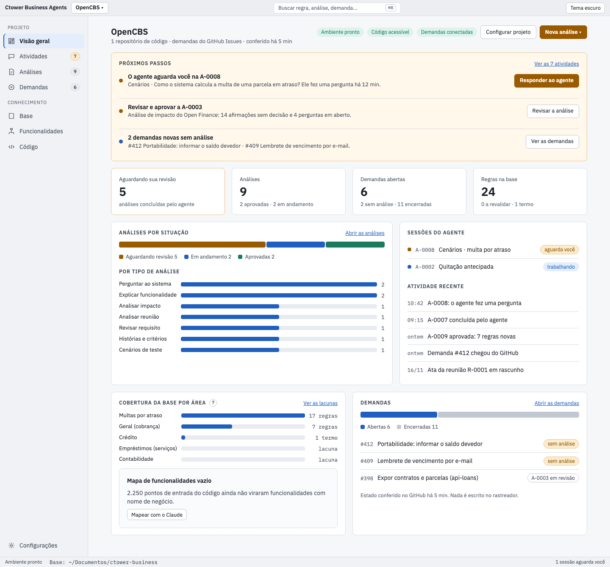
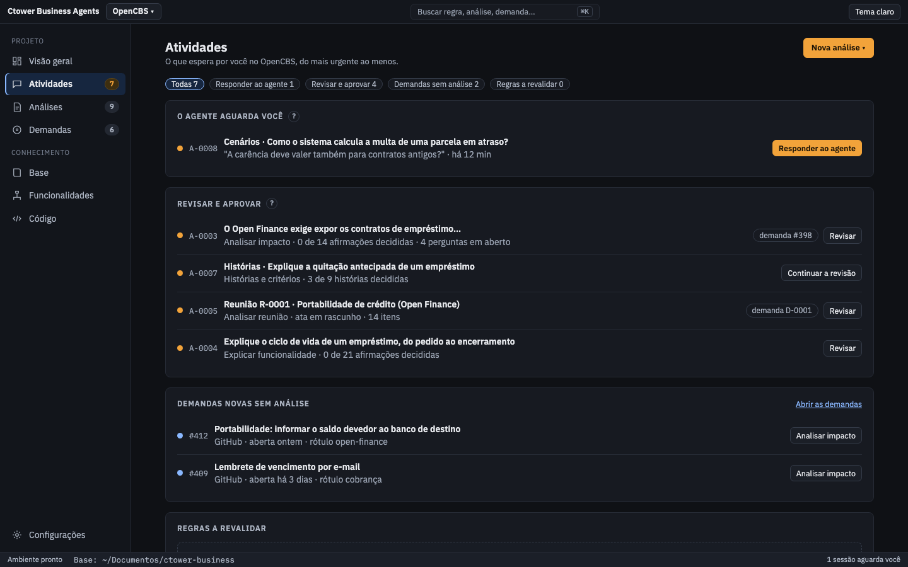
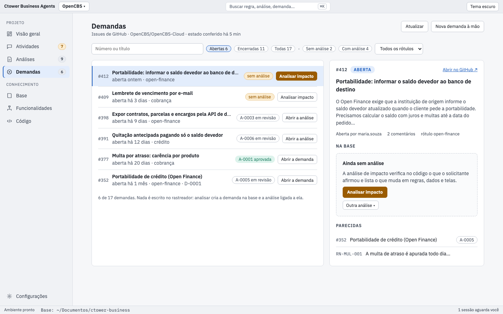
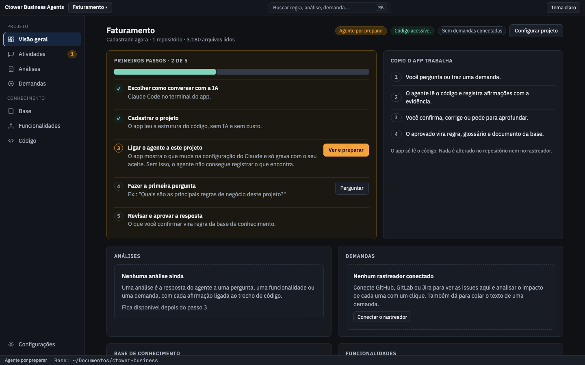
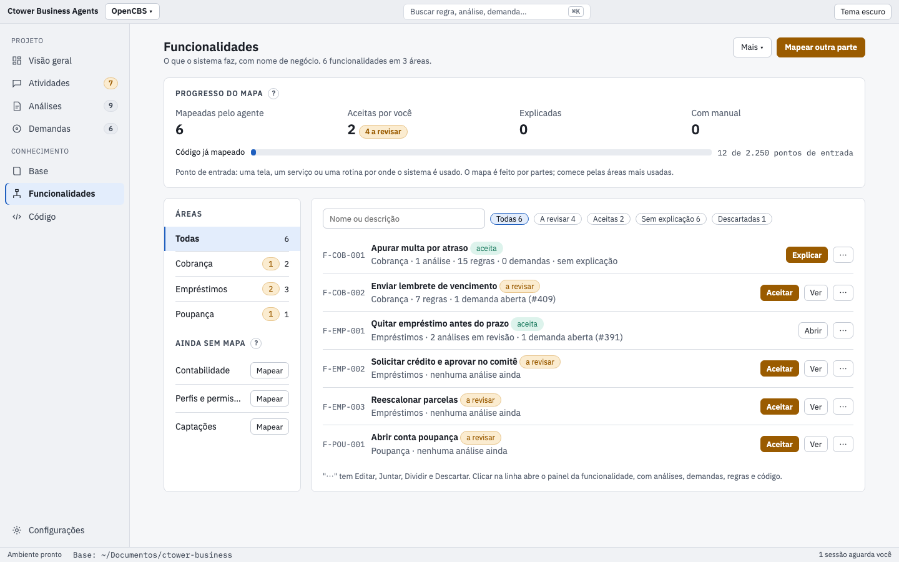
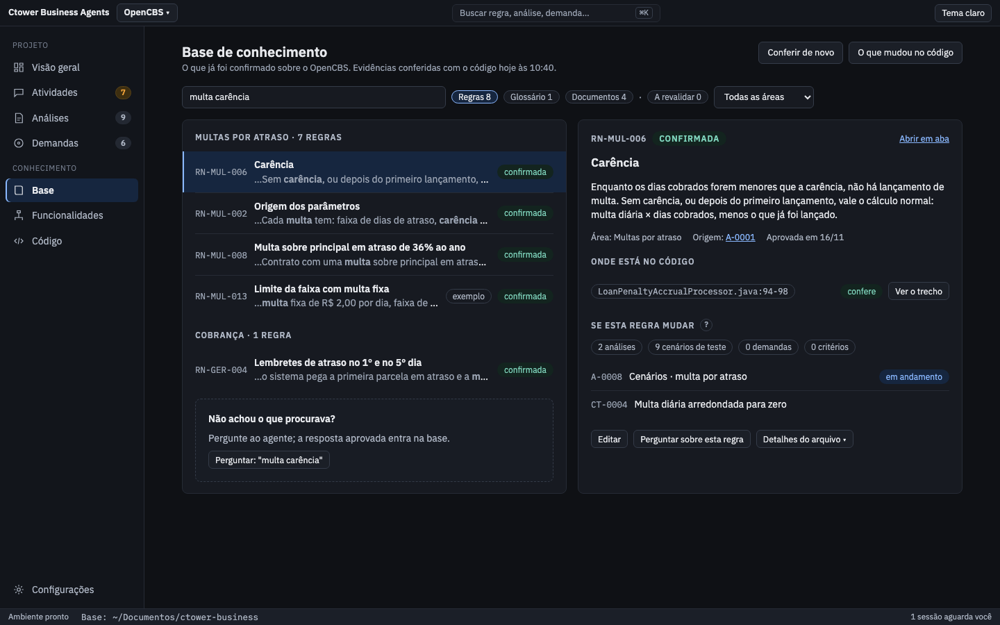

Telas estáticas e navegáveis da proposta: o menu lateral de cada tela leva às outras, e o botão da barra de título alterna o tema. As cores são os tokens de ui/src/theme.css. Relatório: 2026-11-23-revisao-ux.md.





